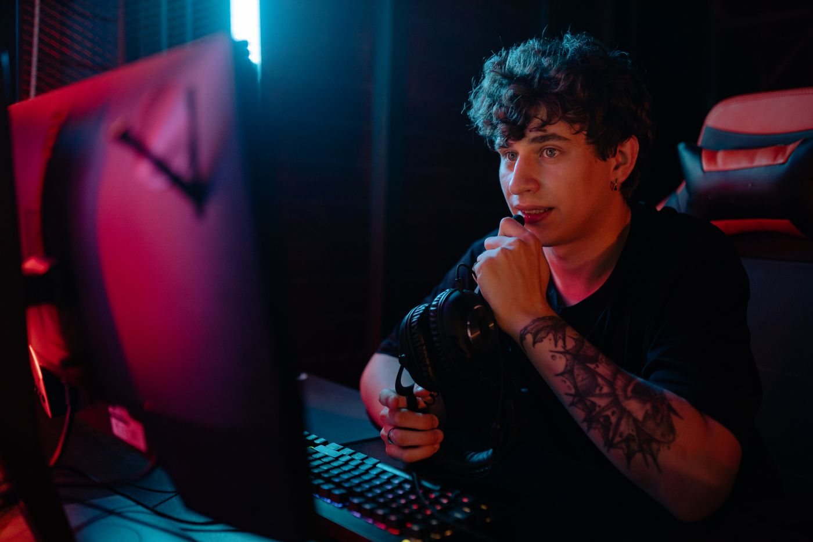

105M
Monthly Twitch viewers.
A global audience to connect with.
Amazon Ads · Sep 2025 ↗English speech. 19 translation languages. AI translation quality varies; the demo shows three examples.

Something happened.
You missed what.
Scripted captions & fictional commentary. Photo: Yan Krukau / Pexels.
THE SOUND-OFF PROBLEM
Sharethrough · 750 people surveyed · June 2021 ↗
General mobile video habits—not a Twitch or live-stream mute rate.
105M
A global audience to connect with.
Amazon Ads · Sep 2025 ↗50%+
More than half of Twitch users.
Twitch · Jul 2024 ↗70%
Your first impression fits in a hand.
Twitch · Jun 2026 ↗Twitch’s redesigned mobile feed opened muted by default.Reported July 2024. Mobile use is not a measured mute rate.
↗One conversation. Two languages.
Keep your words. Add the translation.
A community that speaks different languages?
French. Korean. Arabic. Welcome them in.
On the train. In a quiet room. Hard of hearing.
Your words still belong on screen.
Shared reactions. Viewer-triggered modes.
Let your community be part of the show.
Bring AuraMax Captions to your stream.
Free signup · Google Form · Private responses
Working local prototype for Twitch + OBS.
AI features use your own paid OpenAI API key.
What’s ready?The local prototype includes captions, translation, chat modes, and OBS browser sources. This page’s demo is scripted. Website onboarding is still in development.
Which languages?English speech captions plus 19 translation languages in the local studio. The scripted demo shows Chinese, Spanish, and Japanese. Spoken input is English; the voice-dubbing preview is Chinese only. Translation quality varies by language and needs review for your stream.
What does it cost?This demo and signup are free. AI processing uses your own OpenAI API key and incurs usage charges. Product pricing is not set.
What’s real?Speech, translations, chat summaries, and fiction are separate tracks. Chaos adds playful fictional commentary. The 75% survey covers general mobile habits, not Twitch viewing. No guaranteed channel growth.